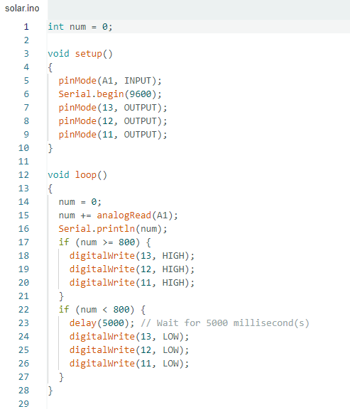
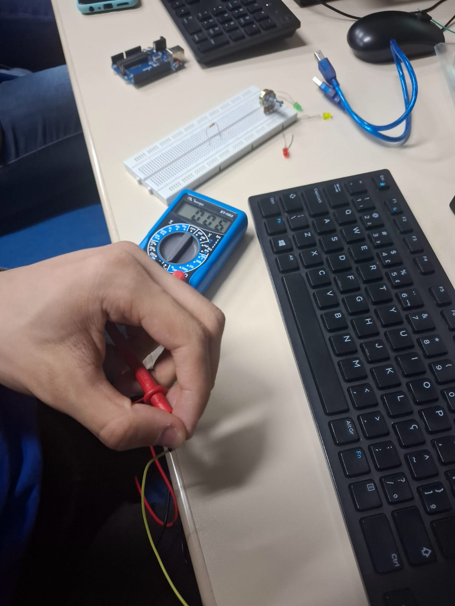

LDr na pratica
Arduino IDE
Filmagem da pratica
medição com multimetro
Esse teste serve para saber se o fio esta funcionando, se estiver correto,
o multimtro ira apitar
O teste com resistor serve para ver o quanto ele tem de resistencia, no visor mostra o qual aproximado ele é